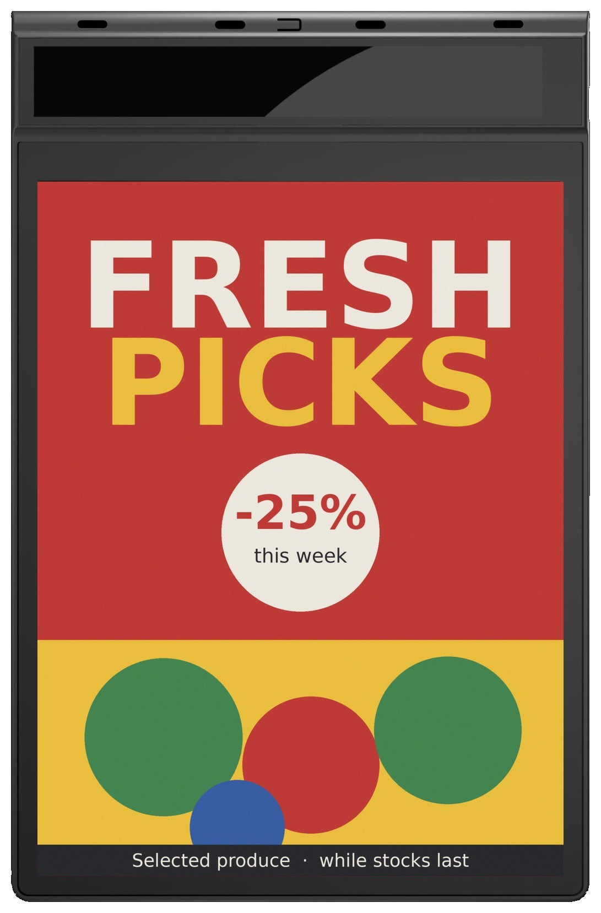
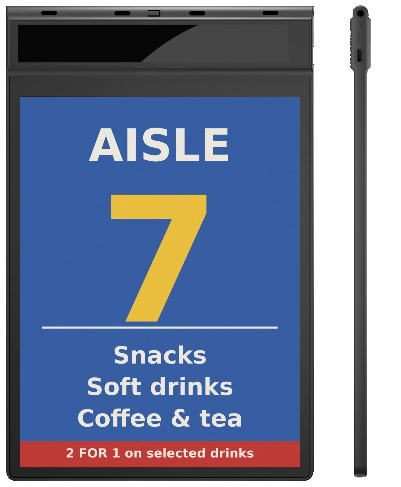
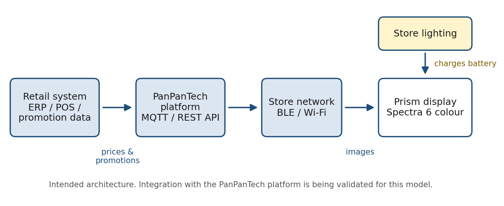

Solar-powered e-paper displays have real uses, but their commercial value usually comes from avoiding battery replacement, charging visits and wiring, not from saving much on an electricity bill. Perovskite is worth adopting only if the complete device proves reliable and costs less to own than the alternatives. Global electricity prices provide context; they do not decide the purchase. A conventional battery shelf label and a rechargeable Prism promotional sign also have different maintenance baselines. Both need an honest comparison of the actual light, storage, wireless workload and service costs.
We supply the Prism colour e-paper display range, so this is also a test of our own claims. The product figures below come from PanPanTech's English v1.0 specifications dated September 25, 2026. They are manufacturer figures, not independent field results. Electricity tariffs were checked on October 2, 2026.


What does electricity cost around the world?
Can commercial electricity prices be compared fairly?
One unit of electricity is one kilowatt-hour, or kWh. There is no single global retail price. Household, commercial and industrial accounts differ, as do consumption bands, taxes and contracts. GlobalPetrolPrices reports a USD 0.172/kWh business benchmark for Q3 2026. This is a private data provider's cross-country benchmark, not a regulated world tariff or necessarily a consumption-weighted global average.
The following representative markets show the scale. They are not a same-date country ranking. Native currencies are retained; dollar equivalents appear only where the source publishes them.
| Market | Account or statistical basis | Price per kWh | Data period | Source |
|---|---|---|---|---|
| China | Business benchmark | CNY 0.791; source's USD equivalent 0.118 | March 2026 | GlobalPetrolPrices |
| India | Business benchmark | INR 10.280; source's USD equivalent 0.107 | March 2026 | GlobalPetrolPrices |
| Japan | Business benchmark | JPY 28.260; source's USD equivalent 0.180 | March 2026 | GlobalPetrolPrices |
| Australia | Business benchmark | AUD 0.349; source's USD equivalent 0.244 | March 2026 | GlobalPetrolPrices |
| United States | National commercial average; preliminary | USD 0.1341 | Full year 2025 | US EIA |
| European Union | Non-household, annual consumption 500-2,000 MWh | EUR 0.1837 | Second half of 2025 | Eurostat |
| Germany | Same Eurostat non-household band | EUR 0.2264 | Second half of 2025 | Eurostat |
| Finland | Same Eurostat non-household band | EUR 0.0748 | Second half of 2025 | Eurostat |
| United Kingdom | Non-domestic average, including Climate Change Levy | GBP 0.2451 | April-June 2026 | DESNZ, September 2026 report, page 7 |
Source notes: GlobalPetrolPrices' business benchmark uses annual consumption of 1,000,000 kWh and includes taxes and fees; see its methodology. Eurostat figures include non-recoverable taxes and levies but exclude recoverable amounts; see its statistical definitions. USD equivalents are the provider's published conversions, not October 2 exchange-rate conversions. These benchmarks do not replace a shop's bill.
Within Eurostat's matching band and period, Germany's rate is about three times Finland's. That is a meaningful comparison. Ranking a Saudi base tariff against a tax-inclusive European average without correcting the boundaries is not.
Why is electricity price a poor predictor of solar ESL payback?
A conventional primary-battery ESL does not buy its operating energy through the shop's electricity meter. Replacing that battery with light harvesting therefore does not automatically lower the shop's electricity bill. The avoidable expense is the purchased battery, replacement labour and associated service work.
For a USB-rechargeable sign, there can be a small mains-energy saving, but service visits may still dominate. Use the actual marginal tariff for that calculation. Fixed account fees and demand charges will not necessarily fall when a tiny charging load disappears.
Is electricity cheap in the Middle East?
Which tariff should a retailer actually use?
Some Gulf commercial tariffs are low, but there is no single Middle East electricity price. A shop needs its commercial account rate, not a subsidised household rate, and should include applicable fuel charges and taxes. Dubai's schedule is not a schedule for every emirate, either.
| Market and account | Monthly consumption band | Published energy tariff | What the comparison includes |
|---|---|---|---|
| Saudi Arabia, standard commercial schedule | First 6,000 kWh | SAR 0.20/kWh | Base consumption tariff; taxes and other account charges excluded |
| Saudi Arabia, standard commercial schedule | Consumption above 6,000 kWh | SAR 0.30/kWh | Base consumption tariff; confirm the serving utility and contract |
| Dubai, DEWA commercial | First 2,000 kWh | AED 0.230/kWh base | October 2026 fuel surcharge: AED 0.060/kWh; 5% VAT applies |
| Dubai, DEWA commercial | 2,001-4,000 kWh | AED 0.280/kWh base | Same fuel surcharge and VAT |
| Dubai, DEWA commercial | 4,001-6,000 kWh | AED 0.320/kWh base | Same fuel surcharge and VAT |
| Dubai, DEWA commercial | Consumption above 6,000 kWh | AED 0.380/kWh base | Same fuel surcharge and VAT |
Sources: Saudi Electricity Regulatory Authority, Electricity Service Guide, tariff table on page 67; DEWA commercial slab tariff and October 2026 fuel surcharge. These are examples, not a region-wide price survey.
Dubai's variable electricity charge in those bands is therefore AED 0.3045-0.462 per kWh, including that month's surcharge and VAT but excluding fixed meter charges. These are tier rates, not a blended rate for the entire bill. For avoided consumption, use the applicable marginal band. There is no need to convert currencies to see the central issue: a small rechargeable e-paper display uses very little energy in the first place.
Does a low tariff make indoor energy harvesting a false need?
It makes a weak electricity-saving pitch weaker. It does not remove a genuine maintenance or installation problem. Electricity can be inexpensive while reaching a suspended sign, arranging a charging round or adding a socket is still inconvenient. Conversely, an easily reached counter with an available USB supply may have no meaningful problem for photovoltaics to solve.
What does indoor perovskite power actually do?
Does it generate electricity from shop lighting?
Yes. A photovoltaic collector converts part of the incident light into electrical energy. In an indoor sign, power-management electronics use that energy to support the device and recharge its storage battery. The battery covers dark periods and short peaks during communication or screen refresh.
Perovskite is a photovoltaic material family, not a synonym for every indoor solar product. A 2025 National Science Review research paper reported 42.01% conversion efficiency for an optimised laboratory device at 1,000 lux and demonstrated a storage-assisted electronic price-tag application. That establishes technical plausibility; it does not establish Prism's efficiency, its minimum operating illuminance or its service life.
When the light originally comes from mains-powered LEDs, the collector recovers a small portion of lighting energy already being used. It is not a source of free energy created inside the shop. Do not keep lights on longer solely to power a display without counting that extra lighting consumption.
What must work besides the photovoltaic cell?
The power chain is existing light -> photovoltaic module -> harvesting power management -> rechargeable storage or capacitor -> display, radio and controller. Each stage matters. A high-efficiency cell does not establish that the finished device survives darkness, delivers refresh-current peaks or restarts after its storage is depleted.
For example, TI's BQ25570 harvesting controller specifies a cold-start input of at least 600 mV, versus harvesting from 100 mV after starting. This illustrates why recovery and steady operation need separate tests; it does not identify the controller used inside Prism.
Do not recharge an existing primary CR-series lithium battery by adding a solar cell. Panasonic distinguishes non-rechargeable primary cells from rechargeable storage in its lithium battery handbook. A compatible storage system, protection and approved power path are required; this is a device redesign, not a charging accessory.
Is a light-powered sign battery-free or zero-power?
Not in the Prism configuration discussed here. The AES-1243P contains a 300 mAh, 3.7 V rechargeable lithium battery and a USB-C charging port. Its collector assists that battery.
The e-paper panel can retain a static image without continuous display power. That is different from saying the whole device consumes nothing: radios, controllers and power-management circuits still have an energy budget. A retained image also does not prove the device can receive its next promotion. Our ESL battery-life guide explains why communication and refresh schedules belong in every runtime claim.
Which Prism models are actually light-powered?
These are large promotional displays, not interchangeable replacements for every small electronic shelf label. All four use six-colour E Ink Spectra 6 panels for static artwork. Their power arrangements are different.
| Prism model | Display and intended placement | Battery and photovoltaic arrangement | Manufacturer runtime statement and limitations |
|---|---|---|---|
| AES-1243P | 12.43-inch single-sided, 1,208 x 1,600; end-caps and aisle promotions | 300 mAh at 3.7 V; perovskite collector at the top; USB-C fallback | Bluetooth, one update/day: collector is stated to keep the battery charged with adequate light and good signal. Minimum light level remains unconfirmed. Always-connected Wi-Fi, DTIM 3, one update/day: approximately 10 days/full charge |
| AES-1243P-D | Two 12.43-inch panels; suspended aisle signs readable from both directions | Rechargeable battery plus photovoltaic collector; capacity unconfirmed | Preliminary figure: continuous photovoltaic-supported operation at two updates/day. Test conditions and minimum light are unconfirmed; the sheet does not establish collector chemistry |
| AES-1330P | 13.3-inch, 1,600 x 1,200; counters, checkouts and entrances | 5,000 mAh at 3.7 V; USB-C rechargeable; no photovoltaic collector listed | Approximately 3 months with Wi-Fi connected or 6 months disconnected, at five updates/day; good Wi-Fi signal for connected-mode figures |
| AES-3150P | 31.5-inch, 2,560 x 1,440; entrance displays and promotional walls | 7,100 mAh at 11.4 V; USB-C rechargeable; optional indoor photovoltaic strip under evaluation | Approximately 4 months with Wi-Fi connected or 8 months disconnected, at five updates/day. The proposed collector is intended to extend charging intervals, not eliminate charging |
Source: the four PanPanTech Prism English product specifications, v1.0, September 25, 2026; see the Prism product overview. Model numbers are provisional. Runtime statements are conditional manufacturer figures, not identical test protocols across models. Disconnected-mode updates also require an agreed content-delivery workflow.
Why does the wireless mode change the answer?
The single-sided 12.43-inch model makes the distinction clear. Its light-supported runtime statement applies to Bluetooth with one image update per day. Its separate always-connected Wi-Fi figure is about ten days per charge.
Those figures change both the communication regime and the available energy conditions. They are not a controlled solar-on versus solar-off comparison. We cannot subtract one from the other and claim that the photovoltaic collector alone eliminates a particular number of charging visits.
Before choosing Bluetooth, establish who sends updates, through which supported equipment, how receipt is acknowledged and what happens if delivery fails. The right configuration is the lowest-energy one that still meets the content workflow, not the one that produces the longest number on a specification sheet.


How much electricity money is actually involved?
What is the harvested energy of a small shelf label worth?
Consider a transparent illustrative model, not a Prism specification or measured shop result. Assume a 5 cm2 collector, the NSR paper's 118 microwatts/cm2 laboratory output under 1,000 lux from a 3,000 K LED, 12 lit hours/day, 365 days/year and a self-selected 70% delivery efficiency. Scaling the small test device to this area is an assumption, not a finished-module guarantee. Also assume every unit receives that light and all delivered energy is useful.
Annual energy per label = 5 x 118 x 12 x 365 x 0.70 / 1,000,000,000 = 0.00180894 kWh. A fleet of 10,000 labels therefore delivers 18.0894 kWh/year under those assumptions. The denominator converts microwatt-hours to kilowatt-hours.
| Electricity price used | Grid-price-equivalent annual value, 10,000 labels | Basis |
|---|---|---|
| USD 0.1341/kWh | USD 2.43 | EIA's 2025 US commercial average |
| USD 0.172/kWh | USD 3.11 | GlobalPetrolPrices' Q3 2026 business benchmark |
| USD 0.40/kWh | USD 7.24 | Self-selected higher-price sensitivity case, not a country quotation |
Source: output density and lighting condition from the cited NSR paper; tariffs from EIA and GlobalPetrolPrices above. Area, lit hours, delivery efficiency and fleet size are AiESL scenario assumptions. This is a grid-price-equivalent valuation, not measured energy, bill savings or a guarantee that an ESL's workload is covered.
Even in the higher-price case, the energy's grid-price equivalent is small. This does not mean batteries cost only a few dollars: a delivered battery costs more than its energy valued at a grid tariff. It means electricity price alone cannot justify the extra photovoltaic hardware. Test the avoided battery and maintenance costs separately.
Can we calculate energy from battery capacity?
We can calculate nominal stored energy, not measured wall consumption:
Nominal battery energy (Wh) = capacity (mAh) / 1,000 x nominal voltage (V).
The 300 mAh battery stores nominally 1.11 Wh; the 5,000 mAh battery, 18.50 Wh; and the 7,100 mAh battery at 11.4 V, 80.94 Wh. Comparing only mAh would hide the voltage difference.
The following is an illustrative battery-energy accounting exercise for 100 displays. It assumes a nominal full battery-energy equivalent per stated charging interval, treats three months as a quarter-year and four months as a third-year, and gives no credit for photovoltaic yield. Actual mains energy depends on discharge depth, charger losses, standby consumption, usage and ambient conditions.
| Configuration used for illustration | Nominal battery energy | Assumed battery-energy equivalents per year | Annual nominal energy, 100 units | Value at Saudi base tariff, SAR 0.20-0.30/kWh | Value at Dubai variable tariff, AED 0.3045-0.462/kWh |
|---|---|---|---|---|---|
| AES-1243P, always-connected Wi-Fi, one update/day, 10-day interval | 1.11 Wh | 36.5 | 4.05 kWh | SAR 0.81-1.22 | AED 1.23-1.87 |
| AES-1330P, Wi-Fi connected, five updates/day, 3-month interval | 18.50 Wh | 4 | 7.40 kWh | SAR 1.48-2.22 | AED 2.25-3.42 |
| AES-3150P, Wi-Fi connected, five updates/day, 4-month interval | 80.94 Wh | 3 | 24.28 kWh | SAR 4.86-7.28 | AED 7.39-11.22 |
Sources: battery capacities, voltages and runtime assumptions from the Prism v1.0 specifications; tariff inputs from SERA and DEWA above. Energy and monetary values are AiESL calculations, rounded only after calculation. They are not measured annual bills, guaranteed savings or photovoltaic output forecasts.
The conclusion is about scale: on these assumptions, the annual battery-energy value for a fleet of 100 signs is small. Charging losses do not make this a zero-cost bill, but the collector needs another economic justification. Nor should anyone claim that all this energy will actually be harvested: the necessary product-level yield measurements are not yet supplied.
Is replacing an LCD a different calculation?
Yes. Replacing a continuously powered display with e-paper is one decision; adding photovoltaic charging to an already low-energy e-paper display is another. The electricity reduction from the first can be much larger than from the second.
However, they are not equivalent services. Colour e-paper is for static promotions, aisle directions and posters that change occasionally, not video or rapid animation. Compare actual measured power and the same communication requirement, and keep the e-paper benefit separate from the photovoltaic benefit.
Is perovskite better than other power options?
Which material or architecture should a buyer compare?
Perovskite is one route, not the definition of indoor photovoltaics. The 2025 Nature Reviews Clean Technology review discusses established and emerging materials, module scaling and system integration. Our procurement comparison below separates absorber materials from power architectures; it is not a ranking of laboratory efficiencies.
| Route | Why consider it? | Evidence needed before choosing it |
|---|---|---|
| Perovskite indoor PV | Promising indoor conversion performance | Finished-module output; encapsulation and ageing; composition-specific material compliance and warranty |
| Organic photovoltaics, or OPV | An alternative indoor-light absorber with ESL industry partnerships | Module area, usable low-light output, durability and installed system cost |
| Amorphous silicon indoor PV | An established low-power harvesting route | Whether the available area produces enough usable energy under the actual lamps |
| Dye-sensitised cells, or DSSC | Another absorber route that can target indoor light | Module stability, sealing, supply availability and supported test conditions |
| Long-life primary battery | Predictable power without depending on room lighting | Actual workload-dependent replacement date, access cost and battery disposal |
| Shared shelf power rail | Can centralise collection or use a wired feed | Contact reliability, rearrangement cost and the number of labels affected by a common failure |
Sources: the cited review for photovoltaic routes; SOLUM/Epishine's 2025 announcement for an organic-PV rail example. Selection questions and battery/rail comparisons are AiESL engineering analysis, not measured product rankings.
SOLUM and Epishine announced a light-powered rail system in January 2025 using printed organic solar cells, not perovskite. This shows a supplier-developed alternative; a press release does not establish independently verified deployment numbers, failure rates or payback. OPV progress cannot be relabelled as evidence of perovskite maturity.
Should every label have its own collector?
Not necessarily. A shared collector may reach better light than a shaded lower shelf; a rail also introduces contacts, installation work and common failure points. Individual collectors distribute the failure risk but need enough illuminated area at every position. A mixed store might retain batteries in dark locations and harvest light only where it works reliably.
Ask for material declarations, broken-module handling and end-of-life arrangements, including lead where present. Neither the word "perovskite" nor encapsulation alone establishes product compliance. Compare finished products under the same lamp spectrum, collector area, workload and ageing conditions, not record efficiencies measured under different lights.
Where is the real commercial value?
Which operational problems can light harvesting solve?
| Situation | Potential value | What must be demonstrated |
|---|---|---|
| An end-cap moves when the promotion changes | Placement without routing a mains cable each time | The new position receives enough light and maintains reliable communication |
| A suspended sign is awkward to reach | Fewer physical charging interventions | Same-mode trial shows a longer interval; approved safe-access process still exists |
| Many displays are distributed across a store | Less charging-round administration | Staff minutes and charging exceptions fall in a measured pilot |
| A counter already has accessible power | Often limited incremental photovoltaic value | Any premium beats a simple rechargeable or powered alternative |
| A position is frequently shaded or dark | Possible poor fit despite cheap hardware energy | Storage reserve and fallback charging cover the real dark period |
Source: AiESL deployment analysis. These are use-case hypotheses to test, not quantified savings claims.
The relevant metric is often staff minutes per maintained sign, not kilowatt-hours per sign. Record removal, charging, reinstallation, checking and exceptions. Batch charging can make a visit cheaper than an individual intervention; inaccessible mounting can make it more expensive. Neither is universal.
How should a buyer test the premium?
For a like-for-like pilot, use:
Annual net operational benefit = avoided service labour + avoided wiring cost allocated over its useful life + verified avoided battery/service costs + measured electricity saving - added support and maintenance cost.
Compare this with the incremental installed cost of the photovoltaic option, including compatible communication equipment. Count only avoidable costs and do not count the same staff time twice. Rechargeable batteries can still age; a collector does not remove replacement, inspection or end-of-life costs.
Our guide to calculating ESL ROI uses the same principle of explicit inputs, although its shelf-repricing model is not a plug-in payback calculator for Prism promotional signs. No Prism purchase prices or matched photovoltaic-on/off maintenance results are provided here, so a numerical payback promise would be invented.
What if the existing ESL battery already lasts years?
Count replacement spending in the year it would actually happen, not as an invented annual cash saving. Our ESL cost guide provides the broader ownership-cost context; the incremental power decision still needs its own baseline.
Here is a deliberately small sensitivity example: a ten-year horizon, USD 1.50 extra installed cost per light-powered label, USD 3.00 battery-plus-labour cost per replacement, and 8% annual discounting. All are self-selected assumptions, not AiESL quotations or industry averages. Assume the harvesting system avoids those replacements without its own storage or repair expense: an optimistic simplification.
| Assumed original battery life | Avoided event strictly before the end of year 10 | Present value of avoided cost per label | Balance after USD 1.50 premium |
|---|---|---|---|
| Seven years | One replacement in year 7 | USD 1.75 | USD 0.25 before any extra harvesting-system maintenance |
| Ten years | None; the year-10 endpoint event is excluded | USD 0.00 | USD -1.50 |
Illustrative AiESL calculation: year-7 present value = 3 / 1.08^7 = USD 1.75047. The horizon excludes its endpoint replacement and all terminal values. A different horizon convention must include both consistently. No field lifetime or solar-system price is asserted.
The first case has very little room for added inspection, storage replacement or failure costs. The second does not recover its premium within the chosen boundary. Higher service costs or earlier battery failures can change the result; so can a more expensive harvesting system. The point is sensitivity, not a universal verdict that light power wins or loses.
How do you verify a light-powered display in a real shop?
What should be measured at the installation point?
A bright-looking aisle is not a specification. Measure light at the collector's surface and orientation, not only at a horizontal desk or the centre of the aisle. Shelves, hanging brackets, packaging and the sign itself may shade the collector. Record lamp type, operating hours, any daylight contribution and the darkest expected trading period.
The 2026 Nature Energy best-practice paper for indoor photovoltaics identifies 200 lux as the primary reporting condition and recommends additional 50- and 1,000-lux measurements for representative devices. It also requires attention to the light source. This is a useful measurement framework, not proof that Prism is energy-neutral at 200 lux. Its minimum light condition remains to be confirmed.
What would a sensible acceptance test include?
- Fix the intended workload. Specify the radio mode, update count, image workflow, operating hours and required content-delivery deadline.
- Select difficult positions. Include a shaded end-cap, a high mounting point and a location with weak but acceptable wireless reception, alongside a representative bright position.
- Log the system, not just the panel. Use supplier telemetry where available; otherwise agree a safe measurement method for state of charge, update success and external charging events.
- Test darkness and exceptions. Cover nights, closed days, dimming schedules and failed update retries. Check how an operator detects stale content even when the old image remains visible.
- Use a matched baseline. Compare photovoltaic-assisted and non-assisted operation with the same radio and workload. Include any gateway or controller energy in the system boundary.
- Agree pass/fail criteria first. Set permitted charging frequency, minimum reserve, content-delivery success and escalation rules. Require a long-term warranty and ageing plan separately; a short pilot cannot prove years of life.
An energy-neutral system needs harvested usable energy to cover communication, refreshes, idle electronics and losses across its actual light/dark cycle, with an adequate reserve. A battery whose charge trends downward is not continuously self-sustaining, even if a promotional image remains on screen.
Include storage self-discharge, wireless retries, optional LEDs and sensors in that budget. Verify both daily energy balance and the voltage/current available during refreshes. Test recovery from low storage, rather than starting every demonstration with a full battery. Require ageing and encapsulation evidence for the finished module and storage, not just the cell.
Reduce unnecessary radio activity and retries before adding collection area. Then choose mounting, reserve and fallback around the longest required dark period. Photovoltaics should remove a maintenance burden without creating an unpredictable update service.
What else must a Gulf buyer confirm before ordering?
Can the sign be used outdoors because the region is sunny?
Do not assume that. The single-sided 12.43-inch, 13.3-inch and 31.5-inch sheets specify indoor operation at 0-50 degrees C, with charging recommended at 0-40 degrees C. The dual-sided model's operating range is not yet confirmed in its preliminary sheet. Sunlight through an entrance can also change thermal conditions. Indoor harvesting is not an outdoor weatherproofing claim.
Are integration and certification already complete?
The September 25 sheets say that the manufacturer provides a communication protocol and that connection to the PanPanTech platform through MQTT and REST API is being validated. Android and iOS apps plus a web console support setup, evaluation and stand-alone use. Do not treat the intended architecture as an already completed production integration.


The same sheets state CE/FCC not yet certified for these models and RoHS status to be confirmed. Those labels would not by themselves establish every Gulf-market approval anyway. Ask for the current model-specific documentation and destination-market requirements before ordering. For the software work, our POS/ERP integration guide explains what an API or MQTT connection does, without promising that every new product already supports the same production workflow.
Is indoor perovskite harvesting a real need or a false need?
It is a real capability with a conditional commercial need. Keep three questions separate: can the cell generate power, can the complete device reliably update, and will a buyer pay for the maintenance it avoids? A research prototype answers the first; a matched field trial and ownership-cost comparison are needed for the others. Sample requests and exhibition interest do not establish paid demand.
For small ESLs, the strongest potential benefit is avoiding batteries and replacement work. For rechargeable Prism signs, it is fewer charging interventions and more flexible placement. Cheap electricity weakens an energy-bill pitch but does not remove either operational problem. Where long-life batteries or accessible USB power already meet the need cheaply, photovoltaics may add cost without enough benefit.
Perovskite should earn its place against OPV, other collectors, batteries and shared power through complete-system reliability and cost, including storage ageing and failure handling. We should require that evidence for our own Prism products before asking a buyer to scale them.
The open question is practical: which shelf or sign locations would become genuinely easier to maintain, and what measured reliability and price premium would justify the change? A mixed-power store may be the better answer. Light harvesting can become routine without one material winning everywhere.
Frequently Asked Questions
What is the business electricity price around the world?
There is no universal tariff. GlobalPetrolPrices reports a USD 0.172/kWh cross-country business benchmark for Q3 2026. EIA's preliminary US commercial average was USD 0.1341/kWh in 2025; Eurostat's EU non-household rate was EUR 0.1837/kWh for its 500-2,000 MWh band in the second half of 2025. These differ in period and methodology, so use an actual shop contract for investment calculations rather than treating them as a country ranking.
Is electricity inexpensive for Middle East retailers?
Some Gulf commercial tariffs are low, but there is no uniform Middle East rate. Saudi Arabia's standard commercial schedule lists SAR 0.20-0.30/kWh before taxes and other charges. Dubai's October 2026 DEWA variable energy charge is AED 0.3045-0.462/kWh including its fuel surcharge and 5% VAT, excluding fixed meter charges. Use the retailer's actual utility contract and applicable consumption band.
Can indoor shop lights charge a perovskite-powered display?
Yes, a photovoltaic collector can convert part of indoor light into electricity and recharge storage. Whether it keeps a particular display charged depends on light at the collector, lamp spectrum, lit hours, radio mode, update workload and losses. Prism AES-1243P's minimum light condition remains unconfirmed in its September 25, 2026 specification.
Is the Prism 12.43-inch solar sign battery-free?
No. The AES-1243P has a 300 mAh, 3.7 V rechargeable lithium battery, a perovskite collector and USB-C charging. The manufacturer's light-supported runtime statement applies to Bluetooth with one update per day under adequate light and good signal. Always-connected Wi-Fi is separately rated at approximately ten days per charge.
Are all four Prism displays solar-powered?
No. AES-1243P has a specified perovskite collector. AES-1243P-D has a photovoltaic collector with preliminary details. AES-1330P is USB-C rechargeable with no collector listed. AES-3150P is rechargeable; an optional photovoltaic strip is under evaluation to extend charging intervals, not replace charging.
How much electricity money could photovoltaic charging save?
A conventional primary-battery ESL does not draw its power through the shop's electricity meter, so switching it to light harvesting does not automatically cut the bill. For rechargeable signs, measure actual avoided mains consumption against the same workload and communication mode. The calculations above show small grid-energy values, not guaranteed savings. Avoided batteries, charging work and wiring can be more valuable.
Can I recharge an existing CR2032 with an indoor solar cell?
No. A primary CR2032 is not rechargeable. Do not connect a solar charging circuit to it. A light-powered device needs appropriately designed rechargeable storage or a capacitor, with compatible protection and power management. Retaining a primary battery as backup requires an approved design that prevents charging it.
Is perovskite always better than OPV or a long-life battery?
No. Compare complete devices under the same light, collector area and update workload, including storage, ageing, compliance and maintenance costs. Organic-PV rail announcements do not prove perovskite product performance. A dependable long-life battery can be the better choice in dark locations or where the harvesting premium exceeds the service costs it avoids.
Can a solar-powered e-paper sign replace a video screen?
Not for the same content service. Prism colour e-paper is intended for static promotions, aisle directions and posters that update occasionally. It is not a substitute for video or rapid animation. Compare it with a powered screen only where static content satisfies the merchandising requirement.
What evidence should I request before a rollout?
Request model-specific light and runtime test conditions, a matched trial in the intended radio mode, battery-reserve and update-success records, a charging fallback, the integration status, warranty terms and destination-market approval documents. The September 25, 2026 Prism sheets report platform integration in validation, CE/FCC not yet certified and RoHS status to be confirmed.
Sources and Calculation Notes
- Global electricity context: GlobalPetrolPrices business benchmark and methodology, Q3 2026. Country pages in the comparison table show March 2026 data. Private-provider benchmarks, not identical local utility contracts.
- Official electricity statistics: US EIA, preliminary 2025 commercial average; Eurostat's May 2026 release and tax definitions, second-half 2025 non-household band; UK DESNZ September 2026 release, reporting April-June prices, not September tariffs.
- Product data: PanPanTech Prism English specifications v1.0, September 25, 2026, for AES-1243P, AES-1243P-D, AES-1330P and AES-3150P. Public Prism overview. Specifications and approval status should be reconfirmed for an order.
- Saudi commercial tariff: SERA Electricity Service Guide, page 67. Standard commercial base tariff, not a tax-inclusive quotation for every utility account.
- Dubai commercial tariff: DEWA slab tariff. October 2026 surcharge and VAT included only where explicitly stated; monthly values can change.
- Perovskite research: Reliable perovskite indoor photovoltaics for self-powered devices, National Science Review, 2025. Laboratory evidence, not a Prism performance certificate.
- Measurement framework: Best practices for measuring the performance and stability of indoor photovoltaic devices, Nature Energy, 2026. Reporting conditions, not a product operating threshold.
- Alternative routes: Promises and challenges of indoor photovoltaics, Nature Reviews Clean Technology, 2025; SOLUM/Epishine organic-PV rail announcement, January 2025. Research and supplier announcements have different evidentiary limits.
- Power-system examples and safety: TI BQ25570 specifications and Panasonic Lithium Handbook. General engineering references, not a declaration of Prism's component selection.
- Arithmetic: annual nominal battery energy = units x battery Wh x annual battery-energy equivalents / 1,000. Small-label scenario energy = area x output density x lit hours x days x delivery efficiency / 1,000,000,000. Avoided replacement present value = event cost / (1 + discount rate)^event year. Dubai variable tier rate = (base + October fuel surcharge) x 1.05. Scenario assumptions are explicit; none are product guarantees, measured savings or quoted prices.